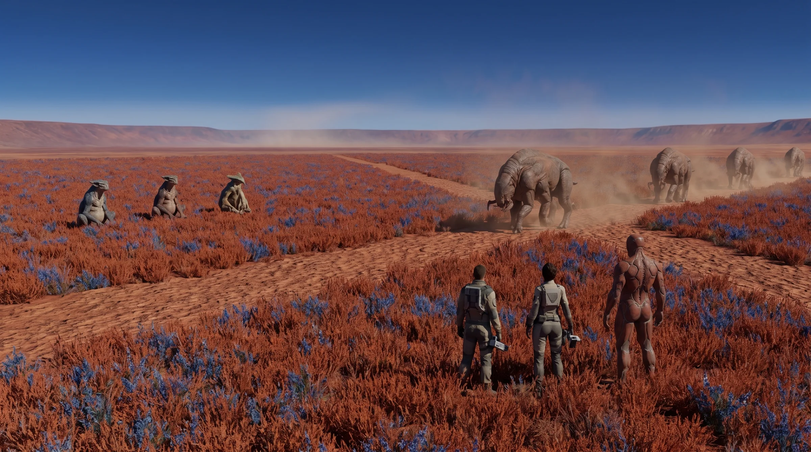
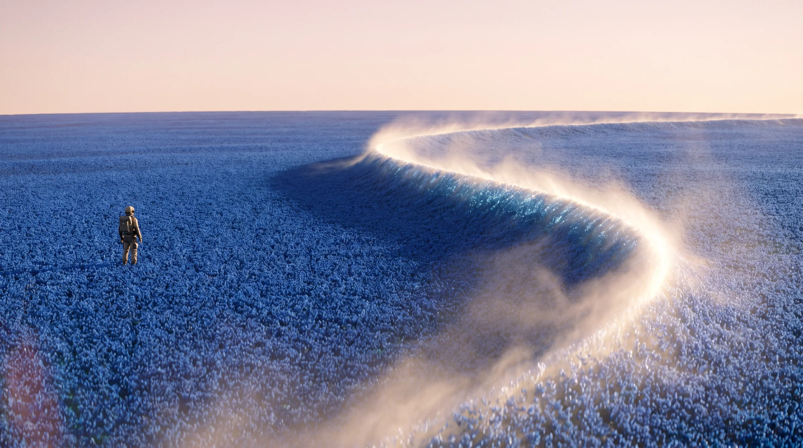
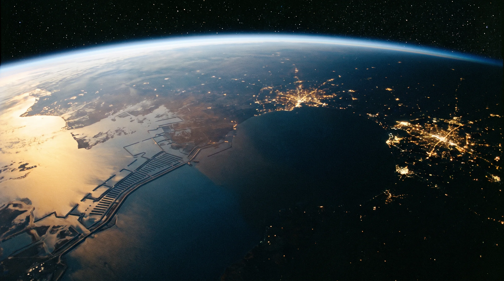

03 — Book Outlines
The Books
Three novels, ninety chapters.
Books
Fractured Horizons · The Narrow Gate · The Open Hand

Book One · January – early July 2095
Fractured Horizons
Who is sending the warnings?

Book Two · February – August 2096
The Narrow Gate
Can Earth survive the Fall without letting the Hollow in?
Book Three · February 2097 – January 2098
The Open Hand
Can the Hollow be killed, and what will each of them give up to do it?
03 — Book Outlines
Chapter-level plot for the trilogy, 30 chapters per book, numbered within each book. World rules are in 01 - Trilogy Bible.md and the cast in 02 - Cast.md. Each chapter gives its date, viewpoint, place and the Earth–Mars signal delay, then what happens, and a card: what the viewpoint wants, what stands against it, the choice and its cost, what it carries forward and of which kind (a question, a debt, a threat or a fracture), the pressures it carries (operational, informational, relational, institutional, moral), its main suspense (physical, temporal, epistemic, political, relational, moral or identity) one working detail of the lived world, and the weather: how the Long Heat shows in the chapter. Each act names its reversal: what its end changes in the goal, the method, authority, information, a relationship or the moral frame.